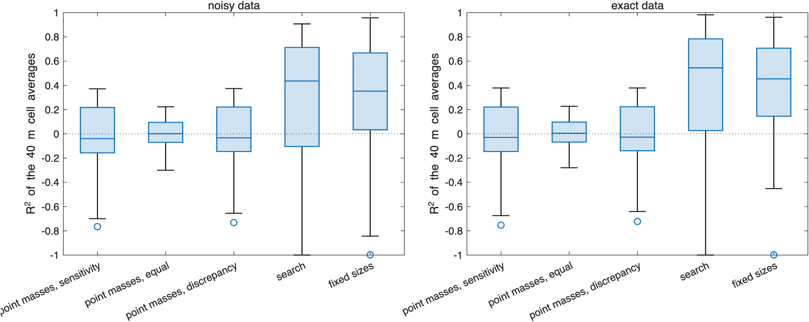

Point masses#
Last edited October 28, 2026
A point-mass solution fills the body with a grid of small masses and fits all of them together to the measurements. It assumes no shapes: where the solution puts mass comes from the measurements and the regularization alone. It is the mass-concentration (mascon) model of gravity-field work, here solved for the relative density of each point.
With thousands of points and tens of measurements, the measurements determine only a few combinations of the masses, and the regularization chooses the rest. Read the result as where the anomaly is concentrated, not as a density map.
Building the grid#
sbtk.interior.sphere_grid(body, spacing_km, radius_km) places one sphere at every point of a cubic grid centered
on the center of figure whose sphere lies inside the body. A sphere inside the body is integrated exactly as a point
mass of its volume times its relative density (Density distributions),
so with a radius well below the spacing the spheres are point masses and the grid cell around each stands for its mass.
| Body | Spacing | Points |
|---|---|---|
| Didymos (mean radius 365 m) | 41 m (mean radius / 9) | 2,667 |
| Dimorphos (mean radius 75 m) | 8.3 m | 2,674 |
Finer grids change little: the measurements, not the grid, limit the resolution.
The fit#
sbtk.interpret.point_masses(prob, weighting, rule) solves the linear problem on a problem prepared by
sbtk.invert.setup with the grid as components. With the mass of the body known, a relative density in point
lowers the density of the rest of the body by ; the columns of are the measurements of
a unit relative density in point with that share of the homogeneous body taken away, whitened by the Cholesky
factor of the covariance. The relative densities minimize
with the whitened difference between the measurements and the homogeneous body. The solution is with and , an system for measurements however many points there are. There are no bounds: a point can be lighter than empty space or denser than rock, because each stands for the mass of its cell. The effective number of parameters is .
Weighting#
sets which solutions the regularization prefers among the many that fit.
| Weighting | Effect | |
|---|---|---|
"equal" |
the minimum-norm solution: the smallest relative densities that fit. Points near the surface change the coefficients most per unit density, so the anomaly is put there, more so at higher degree | |
"sensitivity" |
each point's penalty in proportion to its sensitivity, so deep points are not suppressed for being less visible; the anomaly is spread over depth (a form of the depth weighting of potential-field inversion) |
On the six ROB packages neither weighting is better everywhere. Their AIC differs by less than 4. Above the fitted degrees sensitivity weighting reproduces ROB's exact values far better on ROB-DATA1 and better on ROB-DATA5, equal weighting far better on ROB-DATA4 and better on ROB-DATA6, and the two are close on ROB-DATA2 and 3 (Testing with ROB data). The ROB pages show sensitivity weighting.
Choosing the regularization parameter#
The rule sets , and with it how much structure the solution has:
| Rule | Use | |
|---|---|---|
"aic" |
the lowest AIC, (a scan of from −12 to 12, then golden-section search) | comparing point masses with other kinds of model on equal terms (Goodness of fit) |
"consistent" |
the largest with and at least one degree of freedom left (scan, then bisection) | the smoothest solution the measurements allow: the least structure they require |
"discrepancy" |
the largest with (bisection) | the discrepancy principle; with few measurements it leaves near , not consistent |
If no is consistent, "consistent" takes the one with the largest p-value and sets pm.consistent false.
With measurements that are nearly exact (or as precise as Hera's for Dimorphos), the AIC rule fits far more closely
than the consistent one: on the ROB Dimorphos packages it lowers the AIC of the point masses by 14 to 21.
Reading the result#
pm (pm) holds the relative density and the mass anomaly of every point (the masses sum to zero), the totals and
mass-weighted centroids of the positive and negative parts, , and the p-value, and the
normalized residual of every measurement. pm.model is the solution as a model: sbtk.interpret.anomaly,
sbtk.gravity.forward and sbtk.gravity.field_at evaluate it like any fit, so its coefficients of any degree and
its field at a point can be compared with other solutions. sbtk.plot.point_masses draws it averaged over cells of
the grid spacing; sbtk.plot.solution_cuts draws it beside other solutions on the same color scale.
- Where, not what. The positive and negative parts show the side and the depth range of an anomaly. They do not show its shape: a dense sphere comes out as a smooth lobe, a ring as a band.
- Point masses against components. Where the point masses put mass where a model of a few components does, the measurements, not the choice of components, place it. Where they differ, the measurements allow both.
- Not a density map. On 60 synthetic interiors whose truth is known, the cell averages of the point masses explain little of the true density at their own resolution, much less than a model of the right components (Point masses on known interiors).
Point masses on known interiors#
tests/studies/point_mass_study.m fits the 60 interiors of the geometry search study (core, torus and layer, with
and without boulders and a random density field), exact and with noise, with 1,389 point masses every 40 m, each
weighting and rule. Every solution and the true interior are averaged over the same 40 m cells, the resolution of the
point masses, and compared by the of the cell averages (the fraction of the variance of the true cell averages
explained):
Point masses and models with components: medians over the true models (degrees 1-5).
cell R2: R2 of the density averaged over 40 m cells, against the true interior averaged over the same cells.
== core, torus, layer, noisy data (30 true models)
cell R2 chi2/nu consistent parameters
point masses, sensitivity, AIC -0.08 0.911 1.00 32.2
point masses, equal, AIC -0.04 0.916 1.00 32.5
point masses, sensitivity, p = 0.05 -0.06 2.17 0.93 29.7
point masses, equal, p = 0.05 -0.04 2.21 0.87 29.9
point masses, discrepancy -0.05 4.16 0.00 26.6
search 0.70 1.03 1.00 9.0
fixed sizes 0.60 1.85 0.33 6.0
== with unmodeled structure, noisy data (30 true models)
cell R2 chi2/nu consistent parameters
point masses, sensitivity, AIC 0.07 0.942 1.00 32.6
point masses, equal, AIC 0.01 0.951 1.00 32.4
point masses, sensitivity, p = 0.05 0.08 2.24 0.97 30.2
point masses, equal, p = 0.05 0.02 2.17 0.93 29.6
point masses, discrepancy 0.08 4.52 0.00 27.2
search 0.02 1.98 0.27 25.0
fixed sizes 0.30 9.46 0.00 6.0
== core, torus, layer, exact data (30 true models)
cell R2 chi2/nu consistent parameters
point masses, sensitivity, AIC -0.06 0.854 1.00 31.6
point masses, equal, AIC -0.03 0.851 1.00 32.0
point masses, sensitivity, p = 0.05 -0.06 2.07 0.93 28.7
point masses, equal, p = 0.05 -0.03 2.12 0.97 29.2
point masses, discrepancy -0.05 3.82 0.00 25.8
search 0.76 0.0408 1.00 9.0
fixed sizes 0.68 0.915 0.57 6.0
== with unmodeled structure, exact data (30 true models)
cell R2 chi2/nu consistent parameters
point masses, sensitivity, AIC 0.09 0.866 1.00 32.2
point masses, equal, AIC 0.02 0.888 1.00 31.6
point masses, sensitivity, p = 0.05 0.09 2.16 0.90 29.6
point masses, equal, p = 0.05 0.02 2.07 0.97 28.7
point masses, discrepancy 0.09 4.26 0.00 26.8
search 0.11 1.6 0.57 21.0
fixed sizes 0.38 9.09 0.03 6.0
The rule changes how closely the point masses fit, not what they find. With the AIC rule they fit every interior (median reduced 0.85 to 0.95) with about 32 effective parameters of the 38 measurements; with the consistent rule they fit almost every interior with about 29. Either way their median stays between −0.08 and 0.09. On the interiors of a core, a torus and a layer the search and the model of fixed sizes reach 0.60 to 0.76. With boulders and a random density field every kind falls to 0.38 or below.
Example#
grid = sbtk.interior.sphere_grid(body, 0.041, 0.008); % Didymos: 2,667 points
prob = sbtk.invert.setup(body, grid, obs, sbtk.invert.options(moi_labels={'Ixx', 'Iyy', 'Izz'}));
pm = sbtk.interpret.point_masses(prob, "sensitivity", "aic");
fprintf("%.1f effective parameters, reduced chi-square %.2f, AIC %.1f\n", pm.p_eff, pm.chi2_reduced, ...
pm.chi2 + 2*pm.p_eff)
fig = sbtk.plot.point_masses(body, pm, 0.041);